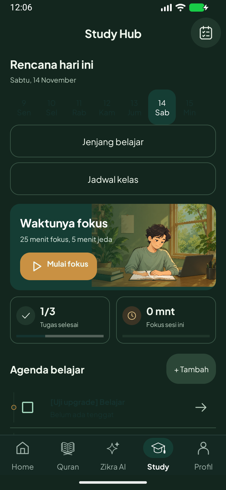

01 / Belajar
Pahami materinya.
Kerjakan satu per satu.
Tanyakan materi melalui Zikra AI, lalu catat apa yang perlu dikerjakan di Study.
- Zikra AI
- Ketik pertanyaan atau tambahkan foto dan dokumen untuk dibahas.
- Study
- Catat tugas, tentukan tenggat, dan susun jadwal belajar.
- Sesi fokus
- Luangkan waktu untuk satu pekerjaan sebelum beralih ke berikutnya.
AI online beta direncanakan untuk usia 18+, memerlukan internet dan memiliki kuota. Panduan offline lebih terbatas.
